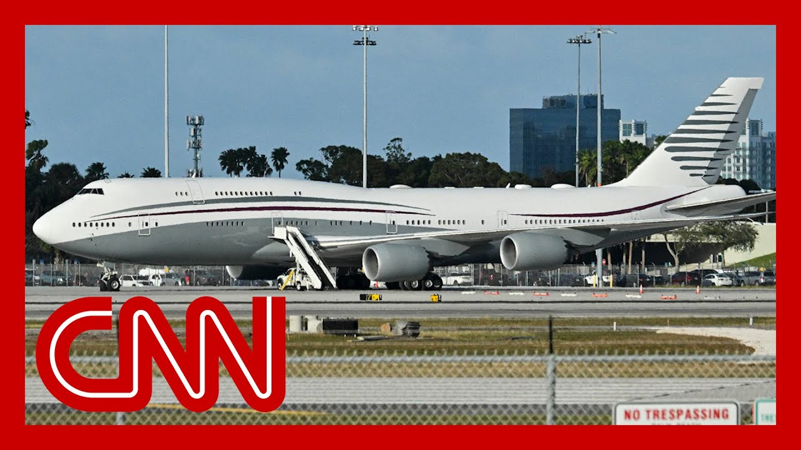

【消息来源与特朗普关于卡塔尔赠送飞机的说法相矛盾】
Summary: CNN reports that the Trump administration initiated the request for a Qatari Boeing 747 to serve as Air Force One, contradicting Trump's claim it was a gift.
摘要： 美国有线电视新闻网报道称，特朗普政府主动向卡塔尔提出请求，希望获得一架波音747作为空军一号，这与特朗普声称该飞机是礼物的说法相矛盾。

⏱️ Estimated Reading Time: 17 min
All right.
好的。
This is morning news, CNN reporting on the giant.
这里是早间新闻，CNN正在报道这架巨型飞机。
747 President Trump wants the U.S. to accept as a gift from Qatar and then use as Air Force One.
特朗普总统希望美国接受卡塔尔赠送的这架747飞机，并将其用作空军一号。
This is what the president has said on it.
这是总统对此事的说法。
So I think it's a great gesture from Qatar.
所以我认为这是卡塔尔的一个很好的姿态。
I appreciate it very much.
我非常感激。
I would never be one to turn down that kind of an offer.
我绝不会拒绝这样的提议。
I mean, I could be a stupid person.
我的意思是，我可能会是个愚蠢的人。
Say, no, we don't want a free, very expensive airplane.
说“不，我们不想要一架免费的、非常昂贵的飞机”。
but it turns out there's nuance here.
但事实证明，事情并非如此简单。
Sources tell CNN it was the Trump administration that made the initial approach.
消息人士告诉CNN，是特朗普政府首先提出了这一请求。
CNN's Alex Marquardt has the new report.
CNN的亚历克斯·马夸特带来了最新报道。
It.
这。
President Donald Trump has talked about this potential deal for a Qatari Boeing 747 to act as Air Force One as a gesture, a gift from the Qatari royal family, which the U.S. would receive for free, he said.
唐纳德·特朗普总统曾表示，这架卡塔尔波音747作为空军一号的交易是一种姿态，是卡塔尔王室赠送的礼物，美国将免费获得。
But sources tell my colleagues in me that it was the Trump administration that first made the outreach to Qatar after Trump came into office that it is, in fact, the U.S. that made this request of Doha.
但消息人士告诉我和我的同事，实际上是特朗普政府在特朗普上任后首先联系了卡塔尔，是美国向多哈提出了这一请求。
The administration was told by Boeing, which is making the next generation of Air Force One planes, that the two planes would not arrive until 2027.
波音公司告诉政府，新一代空军一号飞机要到2027年才能交付。
Trump wanted something sooner, so the Pentagon, with the White House's backing, reached out to Qatar.
特朗普希望更快获得飞机，因此五角大楼在白宫的支持下联系了卡塔尔。
Boeing had given the administration a list of possible planes that could work as Air Force One in the meantime, and Qatar had one of those planes.
波音公司向政府提供了一份可以作为空军一号的飞机清单，而卡塔尔拥有其中一架。
The president's Middle East envoy, Steve Witt Coffee, also helped facilitate these early meetings.
总统的中东特使史蒂夫·威特·科菲也帮助促成了这些早期会议。
The Pentagon then offered to buy the plane, and Qatar offered to sell it.
随后五角大楼提出购买这架飞机，而卡塔尔同意出售。
Now, we're told the lawyers are still hashing out the details, but the white House is still claiming that this is going to be a donation Or, as Trump wrote on True Social recently, a gift free of charge.
目前，我们被告知律师仍在敲定细节，但白宫仍声称这将是一次捐赠，或者如特朗普最近在“真实社交”上所说，是一份免费礼物。
Trump had said that a Qatar official had told him, if I can help you, let me do that now.
特朗普曾表示，一名卡塔尔官员告诉他：“如果我能帮到你，现在就让我这么做。”
Publicly, Qatar has not refuted Trump and in his visit to Doha last week, everything went smoothly.
公开场合下，卡塔尔并未反驳特朗普，而他在上周访问多哈时一切顺利。
But the real story is certainly more nuanced and different from how Trump and his aides have been telling it.
但真实情况显然更加复杂，与特朗普及其助手所描述的不同。
Even if this deal is signed, current and former officials have told CNN that it could take two years and hundreds of millions of dollars, several times the value of the plane, to strip it down and rebuild it with technical and security standards fit for a US presidential aircraft.
即使这笔交易签署，现任和前任官员告诉CNN，可能需要两年时间和数亿美元（是飞机价值的数倍）来拆解并重建这架飞机，使其符合美国总统专机的技术和安全标准。
Remember that plane from Qatar that the Trump administration said was a gift?
还记得特朗普政府声称是礼物的那架卡塔尔飞机吗？
Sources tell CNN that it actually was the Trump administration, which approached the country about a new Boeing 747 that could be used as Air Force One.
消息人士告诉CNN，实际上是特朗普政府主动联系该国，希望获得一架可以作为空军一号的新波音747。
So those sources say immediately after President Trump took office in January, the Pentagon contacted Boeing and was told it wouldn't be able to produce a new presidential jet for at least another two years.
这些消息人士称，特朗普总统在1月上任后不久，五角大楼就联系了波音公司，并被告知至少两年内无法生产新的总统专机。
A senior white House official says that's when President Trump asked Middle East envoy Steve Wyckoff to put together a list of viable planes.
一位白宫高级官员表示，当时特朗普总统要求中东特使史蒂夫·威科夫列出一份可行的飞机清单。
The group chat is back.
群聊又回来了。
What happened next is eventually.
接下来发生的事情最终是。
Are you into this?
你对这个感兴趣吗？
Priorities.
优先事项。
of this administration, they came in and were like, we got to have Air Force One planes, you know, back on the tarmac and the ones that we had ordered in the first administration.
这届政府的优先事项是，他们上任后就说：“我们必须让空军一号飞机重新回到停机坪上，就是我们上一届政府订购的那些。”
I mean, you know, this plane thing, honestly, is just insane.
我的意思是，说实话，这架飞机的事情简直疯了。
Why are we still talking about the plane thing?
为什么我们还在讨论这架飞机的事情？
I know it's my fault because I read the introduction, but it feels I did this to us.
我知道这是我的错，因为我读了引言，但感觉是我让我们陷入了这个话题。
but it feels like it's not going away.
但感觉这件事不会轻易过去。
And this reporting is sort of showing the path from.
而这篇报道某种程度上展示了从“嘿，你觉得我们能弄到一架飞机吗？”到“好的，好的”的过程。
Hey, do you think we can get a plane?
嘿，你觉得我们能弄到一架飞机吗？
Okay.
好的。
Yeah, yeah.
是的，是的。
I mean, I think that the reason we're talking about this is because corruption is such a hit that Republicans have made on Democrats for a really long time, whether it's Nancy Pelosi's stock trades or also the defenses of of Trump taking this plane of talked about Qatar's general influence in a lot of Democratic policies, making spaces.
我的意思是，我认为我们讨论这件事的原因是腐败问题一直是共和党长期攻击民主党的重点，无论是南希·佩洛西的股票交易，还是为特朗普接受这架飞机辩护，都提到了卡塔尔在许多民主党政策中的广泛影响力。
I believe Ilhan Omar was paid for by Qatar at some point to take a trip to the Middle East.
我相信伊尔汗·奥马尔曾接受卡塔尔的资助前往中东旅行。
And so they keep trotting out these, these.
所以他们不断抛出这些，这些。
And it's also the single most kind of effective hit against Trump.
这也是对特朗普最有效的攻击之一。
Like I've just never seen that land.
就像我从未见过这种攻击真正奏效。
Political people believe that everyone is corrupt in DC.
政界人士认为华盛顿的每个人都很腐败。
And if everyone's corrupt, at least with Trump it's out in the open.
如果每个人都很腐败，至少特朗普的腐败是公开的。
It's nakedly available for you to see.
你可以赤裸裸地看到。
I don't really buy this argument, but I think a lot of voters do feel that because Washington is such a swamp, they've bought that argument from Trump.
我并不完全认同这种说法，但我认为很多选民确实这么认为，因为华盛顿就像一个沼泽，他们接受了特朗普的这种说法。
Why would they hit him now?
为什么他们现在要攻击他？
I think are actually uncomfortable with this.
我认为他们实际上对此感到不安。
I mean, he's been taking a lot of hit from conservatives over this because it is Qatar, because Qatar has a relationship, for example, with Hamas.
我的意思是，他因此受到了保守派的很多批评，因为这是卡塔尔，因为卡塔尔与哈马斯有关系。
it has been involved and has a close relationship with Iran.
它还与伊朗有密切关系。
You know, the actual sort of, enemies of the United States.
你知道，这些实际上是美国的敌人。
you know, this this, small emirate has a relationship with them.
这个小酋长国与他们有关系。
And so to take a plane from them, it does have this question.
所以接受他们的飞机确实会引发这个问题。
What are you going to get in return?
你会得到什么回报？
And, Michael.
而且，迈克尔。
And nobody gets anything for nothing because Lulu's right.
没有人会无缘无故得到任何东西，因为露露是对的。
You have heard some prominent voices on the right.
你听到了一些右翼的知名声音。
Say, what are you doing?
说：“你在做什么？”
Why are you doing it?
你为什么要这么做？
This feels like an unforced error.
这感觉像是一个不必要的错误。
what do you think of how the administration is trying to defend it?
你认为政府是如何试图为此辩护的？
they're not really trying to defend it other than to say, hey, look like we're like, this is just this is just again, I think the story is, not to take a free plane.
他们并没有真正试图辩护，只是说：“嘿，看起来我们就像，这只是，这只是再次，我认为故事是，不要接受免费飞机。”
Hey, why wouldn't you?
嘿，你为什么不呢？
Why wouldn't you take it?
你为什么不接受呢？
I mean, the gift storyline seems to be, a classic of the Trump, pattern, which is tell a good story.
我的意思是，礼物的说法似乎是特朗普的经典模式，就是讲一个好故事。
Try to, you know, make it entertaining.
试图让它变得有趣。
Hey, they're just giving me this gift here.
嘿，他们只是送我这个礼物。
I think it's not going away.
我认为这件事不会轻易过去。
For all the reasons everybody's mentioned here.
出于这里每个人提到的所有原因。
It bothers kind of everybody across the political spectrum.
这让政治光谱上的每个人都感到困扰。
And it just reeks of, of of of favor trading.
而且这散发着利益交换的味道。
And even if there's no favor that was offered from gutter, with this plane, it's going to come.
即使卡塔尔没有提供任何好处，随着这架飞机的到来，好处也会随之而来。
And I think people have an intuitive understanding that this doesn't feel right.
我认为人们直觉上觉得这不对劲。
Yeah.
是的。
I do think that's about a stack of cash, but it's like a flying.
我确实认为这与一堆现金有关，但它就像一架飞行的。
It's true for people in DC.
对华盛顿的人来说确实如此。
Like I am personally bothered by this, but at the same time, I don't think it's true that regular people watching this news story are just upset about this kind of corruption because you hear stories about corruption in DC all the time.
我个人对此感到困扰，但与此同时，我不认为观看这则新闻的普通人仅仅因为这种腐败而感到愤怒，因为你总是听到华盛顿的腐败故事。
They kind of all blur together.
它们似乎都混在一起了。
It's not like it sticks in the mind.
它们不会在脑海中留下深刻印象。
This is why I, I think, I think one of the other problems with this is, is about the United States and the way that it's seen in the world.
这就是为什么我认为，另一个问题是关于美国及其在世界上的形象。
And so when you have the plane of the American president being sort of like a branded gift, as if you're a soccer team, you know, you know, with the Qatar emblazoned over your jersey.
所以当美国总统的飞机像一种品牌礼物时，就像一支足球队，你知道，球衣上印着卡塔尔的名字。
I mean, there is something about that that, you know, we're supposed to be the most powerful country in the world, and yet we're getting a plane from a tiny emirate.
我的意思是，这有点，你知道，我们应该是世界上最强大的国家，但我们却从一个很小的酋长国那里得到一架飞机。
I mean, this is slightly probably like Boeing can't build the plane.
我的意思是，这可能有点像波音公司无法建造这架飞机。
Is this just pressure on Boeing or it.
这只是对波音公司的压力还是。
Although that was my theory at first.
虽然这最初是我的理论。
And now it seems like, no, they really just want them.
但现在看来，不，他们真的只是想要这架飞机。
No, I think Trump is obsessed with the plane.
不，我认为特朗普对这架飞机很着迷。
I think it's like the actual plane.
我认为就是这架飞机本身。
You he loved he loved the president.
你知道，他热爱总统。
I would say this, to the point about sort of a cutter being aligned with America's enemies.
我想说的是，关于卡塔尔与美国敌人的关系这一点。
If I, if I were a journalist on Air Force on this new Air Force One, I'd watch what I'd say.
如果我，如果我是这架新空军一号上的记者，我会注意我说的话。
Like what what what what sort of, what sort of things or although it's supposed to be a defense to Defense Department thing, and this is the cost of trying to fit it to be secure.
比如什么什么什么什么样的事情，或者虽然这应该是国防部的事情，而这是试图使其安全的成本。
And that that cost in of itself is something that would make things across.
而这个成本本身会让事情变得复杂。
And one more thing about the plane, which is they just, in the times showed, this sort of brochure because it would have been trying to sell it for a while.
关于这架飞机的另一件事是，他们刚刚在《纽约时报》上展示了这种宣传册，因为他们可能已经试图出售它一段时间了。
It's really nice.
它真的很不错。
I just want to say that it's a really nice plane to get on Air Force.
我只想说，这是一架非常不错的空军飞机。
I get it, I get it.
我明白，我明白。
It's a nice sky, aren't you to say shout out to luxury?
这是一片美好的天空，你不觉得这是在赞美奢华吗？
Can I get your your take on something else?
我能听听你对其他事情的看法吗？
CNN has new reporting tonight.
CNN今晚有新的报道。
from my colleagues that it was actually the white House and the administration that reached out to the guitarist about securing that new plane that the president plans to use as Air Force One.
我的同事报道称，实际上是白宫和政府联系了卡塔尔，希望获得这架总统计划用作空军一号的新飞机。
initially we had been told it Qatar offered it to the white House as they needed a new plane because Boeing was taking too long to build the new Air Force ones.
最初我们被告知，卡塔尔向白宫提供了这架飞机，因为他们需要一架新飞机，因为波音公司建造新的空军一号耗时太长。
Are you comfortable with the president flying on a plane that is not made in the United States?
你对总统乘坐非美国制造的飞机感到放心吗？
Well, the 747 was made in the United States, and then it was set up to their credit.
嗯，这架747是在美国制造的，然后根据他们的信用进行了配置。
But it's been in.
但它一直在。
Yeah, but it's been elsewhere.
是的，但它曾在其他地方。
And, look, there are security issues that are going to have to be addressed.
而且，看，有一些安全问题必须解决。
but there's a transition period here between the 747 to the president.
但在747和总统之间有一个过渡期。
Excuse me.
抱歉。
Right now, the Air Force One, which you were on, which is old, as you can tell, and the brand new ones that are coming on board that aren't ready yet.
目前，你乘坐的空军一号已经很旧了，而新的飞机还没有准备好。
And, and there's, there's during this transition period, there may very well be a way to utilize this aircraft that actually helps us make that transition, because there's tools and parts that can be used not only in this one, but in the brand new ones as well.
而且，在这个过渡期间，很可能有一种方法可以利用这架飞机帮助我们完成过渡，因为有些工具和零件不仅可以用在这架飞机上，还可以用在新飞机上。
But even apart from physically being able to use it in retrofitted, are you comfortable with the president flying on a plane that was gifted to him by Qatar?
但即使不考虑改装后能否实际使用，你对总统乘坐卡塔尔赠送的飞机感到放心吗？
You know, if the question is, can he legally accept?
你知道，如果问题是，他能否合法接受？
No, I'm just ethically, ethically and optically.
不，我只是从道德和形象上问。
Are you comfortable with that?
你对此感到放心吗？
If we can show the American people that there was a method and a reason why it is beneficial in terms of this transition, I think that will help a lot.
如果我们能向美国人民展示这种方法及其在过渡期间的益处，我认为这会很有帮助。